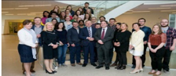
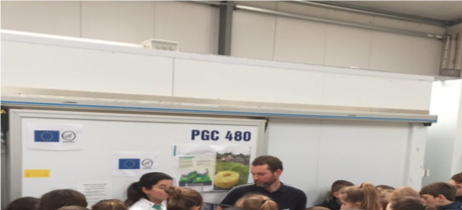
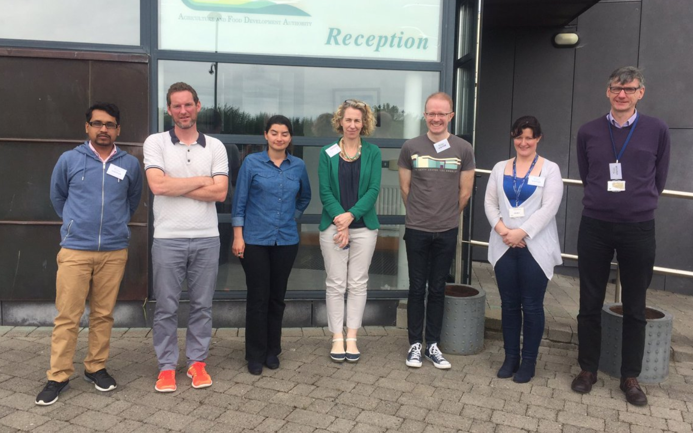
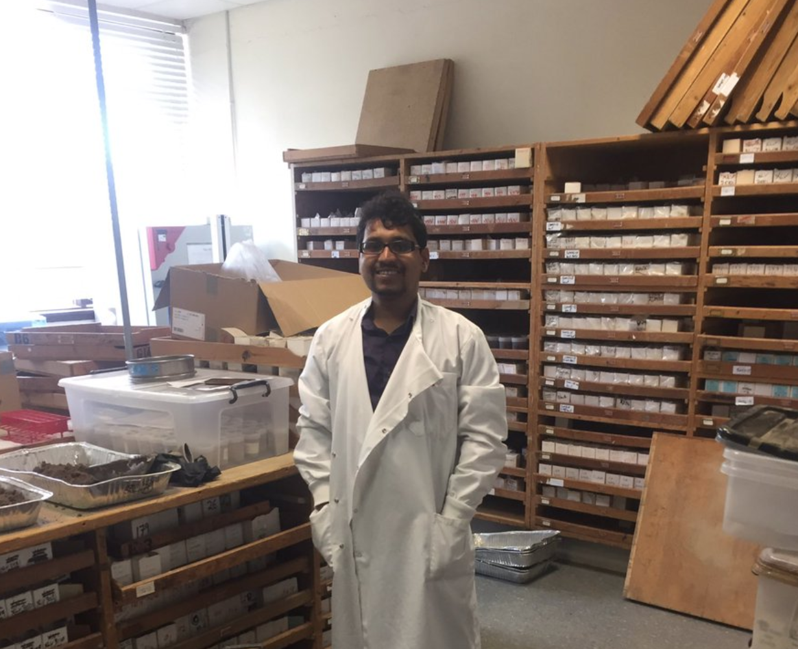

Presentations
Johnstown Castle Seminar Series
Department of Agriculture,Food and Marine (DAFM), Environmental Protection Agency (EPA), Wexford County Council, students, scientists
This seminar series is used within Teagasc to engage a variety of stakeholders from regulation to farmers groups to attend specific talks and field visits. On this occasion the group were introduced to Inspiration ITN and we took a visit to a denitrifying bioreactor which is used to treat nitrates from drainage systems.
Erasmus Mundus for the Community Conference
EU commision and officials of FRSE, Sigma, SALAM, SALAM II, University of Warsaw for Erasmus Mundus ACTION 2 scholarships , scientists, alumnis, students
An all inclusive presentation was made by Golnaz Ezzati during the EM-SALAM project which led onto an introduction with respect to her new project INSPIRATION ITN.
Attendance and presentation by Minister of Agriculture in Research Integrity and Writing skills course sponsered by DAFM
Scientists, students in various field of Agri-industry
Interaction with participants in the course funded by Department of Agriculture Food and the Marine (DAFM) and developed by UCD, UCC, Teagasc and offered by AGRI-FOOD Graduate Development Programme : to develop scientists'and students'skills in transfering the research results to wider audience with various acedmic background and knowledge
Ramiran International Conference Field Visit
Inspiration Fieldstop - interaction over 2 hours with 200 people: scientists/policy makers/regulators/farmers/PhD students
Introduction to objectives, field site and possible research outcomes within INSPIRATION ITN work package 4 in Johnstown Castle

Agriculture Research US; Canada; Peru; Ireland Scientific Meeting
Inspiration Fieldstop - group that went on alternative field trip the day before
Introduction to various projects across
RAMIRAN-related topics incdluing soil and water remediation, environmental protection, and agriculture that is being carried out in named countries
USDA-ARS visitors
Adjunct Assistant Professor Gary Feyereisen of Department of Soil,water and Climate Minnesota and Dr Ray Bryant
Field visit to explore an Inspiration ITN Teagasc field site which showcases flow weirs and an intensive subsurface monitoring network.
Science Week Interaction with Inspiration Growth Room Stop Q&A
Two schools from local areas - 60 kids over 2 days
Interaction with local community transferring knowledge relating to Inspiration ITN. Two schools participated in the 2 day long activities. The kids were aged between 8-10 yrs old and learned about land drainage, cleaning up water and dairy farming.

2016 Annual Information Day on Horizon 2020 Societal Challenge 5
7/10/2016 - 7/10/2016. Croke Park, Dublin. Tellabs.
Stakeholders: Scientists, Industry
Stand with overview of all R&D projects including Inspiration.

Regular R&D Departmental Meetings
Every 6-8 weeks. Tellab, Tullow, County Carlow.
Stakeholders: R&D staff members, Managing and Technical Directors, John Cleary,PhD, BSc, Assistant Lecturer, Chemical & Analytical Science and PhD Students, Carlow IT, R&D Masters placements.
Updates regarding project progress.
